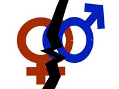

پذيرش > سایت نوشته ها > واقعیت «ختنه زنان» در کردستان و قربانیان آن
 خشونت علیه زنان خشونت علیه زنان

 واقعیت «ختنه زنان» در کردستان و قربانیان آن واقعیت «ختنه زنان» در کردستان و قربانیان آن
13 مهر 1387 - رادیو فردا / شیرین فامیلی - نسخه قابل چاپ
در هفته های اخير انجمن زنان آذر مهر کردستان در بيانيه ای ضمن حمايت از خواست های عمومی جنبش زنان در زمينه تغيير قوانين تبعيض آميز عليه زنان در ايران، بر ويژگی های مسائل زنان در کردستان اشاره کرده است. از جمله اين ويژگی ها، ختنه دختران در نقاطی از استان کردستان ایران است.
بر پايه آخرين گزارش های سازمان ملل، سالانه حدود سه ميليون دختر در آفريقا در خطر ختنه قرار دارند.
گزارش يونيسف در سال ۲۰۰۳ ميلادی حاکی از آن است که اين عمل بر روی ۹۷ درصد زنان مصری انجام گرفته است. کشورهای ديگری که آمار بالايی از ختنه زنان در آنها اعلام شده سودان، يمن، مراکش و سومالی است.
در ايران نيز بر اساس گزارش های غير رسمی و مستقل که در سال های اخير تهيه و ارائه شده است، ختنه دختران در نقاطی از خوزستان و کردستان به عنوان يک سنت قديمی انجام می شود.
اخيراً نگين شيخ الاسلامی، روزنامه نگار و فعال حقوق زنان و همچنين مسئول انجمن فرهنگی و اجتماعی زنان کردستان به نام « آذرمهر»، در بيانيه ای با قيد اين نکته که ختنه زنان در نقاطی از کردستان وجود دارد و يکی از موارد خشونت پنهان است، اعلام کرد که «زنان قربانيان اين فاجعه دوران بربريت، هستند.»
نگين شيخ الاسلامی که خود کرد و از اهالی سنندج است، به راديو فردا می گويد که به صورت تصادفی با مسئله ختنه دختران مواجه شده است.
شيخ الاسلامی در اين مورد می گويد: «همان طور که در مصاحبه ها و مقالات خود مطرح کردم، اين مسئله متأسفانه صحت دارد. البته من با اين مسئله بيگانه بودم و نمی دانستم چنين چيزی در کردستان وجود دارد، ولی وقتی برای تحقيق جامعه شناسی زنان کرد به مناطق مختلف کردستان رفتم با اين مسئله مواجه شدم.»
این خبرنگار کرد می گوید: «مسئله ختنه را در منطقه اورامان که مردمان آن و همچنين قدمت فرهنگی و تاريخی آن با ديگر مناطق کردستان بسيار متفاوت است، ديدم.»
وی می افزايد: «اورامان يک منطقه مذهبی است و مردم می گفتند، ختنه سنت عايشه و فاطمه است و هر دختری بايد تيغ زير دامنش بخورد در حالی که زنان نمی دانستند ختنه چه عوارضی دارد.»
عمل ختنه که با بريدن قسمتی از لبه های بيرونی آلت تناسلی زن انجام می گيرد، در اکثر موارد با روش های کاملاً غير بهداشتی و توسط قابله های محلی انجام می شود.
نگين شيخ الاسلامی می گويد: « زنانی که اين عمل را انجام می دهند و از سوی مردان حمايت می شوند، هنوز به عواقب بيماری زای آن آگاه نيستند.»
شيخ الاسلامی می افزايد:« من از اين موضوع فيلم گرفتم و مصاحبه کردم. اين تحقيق در شهريور ماه انجام شده و قديمی نيست. من به زنان آن جا قول دادم که فيلمشان را پخش نکنم و فقط اگر مسئله ای پيش آمد، بتوانم آن را به عنوان مدرک ارائه دهم. »
«ختنه موجب می شود دخترها پر رو نشوند!»
اين فعال حقوق زنان می گويد : «شايد جالب باشد که برايتان بگويم چند تن از مردانی که امروزی تر بودند، خودشان آمدند و گفتند ما دخترانمان را ختنه نکرديم به همين دليل مادران همسرمان ديگر حاضر نيستند به خانه ما بيايند و می گويند خانه شما ديگر پاک نيست. »
وی می افزايد: «همچنين با خانمی که ختنه می کرد صحبت کردم، او می گفت، اين عوارضی که شما می گوييد ما نمی دانيم و معتقد بود که اين کار برای دختران لازم و خوب است. اين خانم تعريف می کرد که چند تا از مردان پيش او آمده و مدعی بودند، ختنه، دخترانشان را مانند مرد بار می آورد و موجب می شود دختران پر رو نشوند.»
به نظر می رسد به رغم نا آگاهی کسانی که هنوز به عمل ختنه زنان دست می زنند، دختران نوجوان و تعدادی از زنانی که اين عمل روی آنها انجام شده است به اين حد از آگاهی رسيده اند که در مواردی، خود برای تهيه گزارش و اسناد از اين موضوع همکاری می کنند.
نگين شيخ الاسلامی در اين باره می گويد: «من با دخترانی که ختنه شده و درد اين عمل را حس کرده بودند، صحبت کردم. سن ازدواج در اورامان خيلی پايين است و وقتی يک دختر ۱۷ ساله ازدواج می کند، ختنه پنج یا شش سال پيش را به ياد می آورد. اين عمل مربوط به ۴۰ يا ۵۰ سال پيش نيست و من همان جا از دخترانی که ختنه شدند عکس گرفتم.»
به گزارش بنياد جمعيت سازمان ملل متحد، ختنه دختران علاوه بر اين که در مواردی با درد شديد و جانکاه همراه است عواقبی همچون خونريزی، عفونت و حتی ناباروری و مرگ در پی دارد.
سازمان بهداشت جهانی، در ژوئن سال ۲۰۰۶ در گزارشی اعلام کرد: زنانی که ناقص سازی جنسی يا ختنه شده اند در درازمدت دچار مشکل شده و احتمال دارد هنگام زايمان، خود و يا نوزادشان بميرد و نيز ميل جنسی آنها برای هميشه از بين برود.
نگين شيخ الاسلامی، نقش دولت و حکومت را در جلوگيری از ختنه زنان بسيار مهم ارزيابی می کند و می گويد: «با فراهم کردن شرايطی که حقوق اجتماعی مردم در جامعه رعايت شود و ايجاد يک فضای آزاد به اين معنی که هر چيزی در جامعه اتفاق می افتد حتماً سياسی نيست، می توانيم با مناسبات اجتماعی خاص و فراهم کردن بسترهای فرهنگی و آموزش دادن، مسائل را حل کنيم. اين مسئله ربطی به سيستم ندارد بلکه مربوط به حقوق انسان ها درجامعه است.»
وی می افزاید: «متأسفانه اين مسئله درايران به ويژه درکردستان رعايت نمی شود. اين جاست که ما تأثير سيستم ها را حس می کنيم که حتی در مسائل مدنی جامعه نيز چقدر می توانند مخرب باشد.»
از آن جا که ختنه زنان به گفته کارشناسان و پژوهشگران، ريشه در اعتقادات مذهبی و سنتی دارد، برای جلوگيری و محو هميشه آن نياز به فعاليت های فرهنگی و بهداشتی درازمدت است.
بر طبق آمار سازمان بهداشت جهانی و بنياد جمعيت سازمان ملل، در کشورهايی که اين عمل تا حدودی آشکارتر انجام می شود مانند سودان و يمن، کمتر از سه درصد ختنه ها توسط پزشکان و در بيمارستان صورت می گيرد و در بيشتر موارد توسط قابله يا آرايشگر انجام می شود.
گروه های مدافع حقوق بشر و حقوق زنان، ختنه را از موارد جدی خشونت عليه زنان ناميده اند. جوامع غربی در اين زمينه مواضع خود را بارها اعلام کرده و اين عمل را غير انسانی و قرون وسطايی خوانده اند.
بنياد جمعيت سازمان ملل، روز ششم فوريه (۱۷ بهمن ماه) را روز بين المللی عليه ناقص سازی جنسی زنان يا ختنه اعلام کرده است.
رادیو فردا
ارسال به
بالاترین
،
توییتر
،
فریندفید
،
فیسبوک
در همين بخش :
 یک خبر تلخ؟ یک قانونشکنی؟ یک تصمیم بخشنامهای جدید؟ یک خبر تلخ؟ یک قانونشکنی؟ یک تصمیم بخشنامهای جدید؟
چرا بایست به سکسوالیته پرداخت؟ / نفیسه آزاد
آزارجنسی خانگی؛ «قربانی» نه، «نجات یافته»
زنان، بزرگترین بازندگان بهار عرب
سانسور از دیدگاه جنسیتی/الهه امانی
ديگر بخش ها :
طرح یک میلیون امضا
|
مقالات
|
سایت نوشته ها
|
اخبار
|
گزارش كمپين
|
گفت و گو
|
علیه سکوت
|
كوچه به كوچه
|
نامه های شما
|
گزارش ویژه
|
گفتگو با اعضا
|
ویژه سالگرد کمپین
|
تصویر برابری
|
دل آرام علی
|
تریبون
|
مقالات
|
تاریخ شفاهی
|
خارج از چارچوب
|
کتابخانه
|
درباره کمپین
|
کمپین در شهرها
|
کمپین در بند
|
صدای تغییر
|
ویژه 22 خرداد
|
لایحه حمایت از خانواده
|
گالری
|
عشا مومنی
|
امیر یعقوبعلی
|
خدیجه مقدم
|
راحله عسگری زاده و نسیم خسروی
|
پروین اردلان،جلوه جواهری، مریم حسین خواه، ناهید کشاورز
|
زینب پیغمبرزاده
|
سعیده امین، سارا ایمانیان، محبوبه حسین زاده، ناهید کشاورز و همایون نامی
|
احترام شادفر
|
نسیم سرابندی زاده،فاطمه دهدشتی
|
وبلاگ مهمان
|
پرونده خرم آباد
|
دستگیری ها
|
مریم مالک
|
پرستو اللهیاری
|
مهرنوش اعتمادی
|
سمیه رشیدی
|
Other Languages
|
همراهان
|
«فراخوان کمپین ده روز با بهاره هدایت»
| English
|